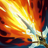

起手組件
- 增幅典籍
提高一技與前期爆發。
校正至 7.3f · 2026-11-13。Tier與配置是本站的模式策略判斷，不是官方勝率排名。
本站獨立邏輯複核：以既有手機版技能／裝備／符文資料與已整理的7.3f官方差異推演；本輪不採用外站評級、勝率或推薦配置。
單線五人戰重視消耗、清兵、開戰或保排；側線壓力與野區入侵優勢不直接計分，回血也不能假設抵銷全部消耗。
巫妖之禍 → 無限寶珠：前者提供施法後的普攻收益；能安全補普攻才有價值，後者補壓低血線後的收尾。以這條路線的輸出距離打團，死亡回補時再決定後續防護；沒有回城購物可補救每次換血。
死亡電刑：短時間三次獨立命中換取爆發，不把單發消耗當完整觸發。其餘選用即刻衝擊、暴君、眼球收集器、致命一擊，依本頁輸出方式與生存需求配套。
閃現＋雪球戰車。雪球提供接近機會，命中後仍要確認隊友距離，不必每球都進。標準ARAM不套用打野重擊收益。
1 技 > 3 技 > 2 技。主 1 提高主要遠距傷害，次 3 強化貼身爆發；二技主要提供魅惑與降魔抗，大絕能點就點。
本站獨立邏輯複核：以既有手機版技能／裝備／符文資料與已整理的7.3f官方差異推演；本輪不採用外站評級、勝率或推薦配置。 完成策略與配置一致性複核，不等於全部技能逐級數值、傷害計算及所有特殊互動已實測；既有缺證項目仍保留。 標準ARAM倍率沿用既有記錄；賽勒斯倍率仍未確認。
起手組件 → 一階鞋或首件核心（依壓力調整）→ 核心成裝 → 鞋子升級 → 情境後續裝。五件成裝加一雙鞋；鞋子兩張圖表示升級前後，不是同時購買兩雙。
提高一技與前期爆發。

強化三技貼身後的爆發與普攻傷害。
提高低血目標收割能力，與大絕斬殺相性很好。

中後期直接放大整套爆發。

敵方魔抗成形後維持穿透。

進場前擋一次關鍵控制，提升刺殺成功率。

伊芙琳：魔力之靴升級，提供法傷路線的穿透與續航；需按敵方魔防與生存壓力決定完成時機。

需要更多魔力與前期續航時使用。

保留最可靠的進退與關鍵技能銜接；雪球戰車進場後仍可用閃現修正位置。

雪球命中後可等待隊友跟上再進場，讓近戰英雄在單線拉扯中擁有穩定的接戰與追擊角度。
死亡電刑：短時間三次獨立命中換取爆發，不把單發消耗當完整觸發。

衝刺、跳躍、瞬移、傳送或脫離潛行後，4 秒內對敵方英雄的下一次普攻或技能造成 10–65 額外真實傷害。
對生命低於 50% 的英雄造成傷害時，造成額外適性傷害。
參與擊殺英雄或史詩級野怪後，獲得 1.5 物理攻擊或 3 魔法攻擊，最多疊加 8 層。
對生命低於 40% 的敵方英雄造成 8% 額外傷害。
1 技 > 3 技 > 2 技
主 1 提高主要遠距傷害，次 3 強化貼身爆發；二技主要提供魅惑與降魔抗，大絕能點就點。
五級前隱形尚未成形，先用一技安全消耗。魅惑不要每次都掛最遠後排，前排走位失誤一樣可以先抓。
巫妖＋無限寶珠後斬殺線明顯。從草叢與隊伍側邊進場，魅惑成熟再動手，大絕擊殺後立刻脫離。
不要第一個進場。等敵方控制交掉後再切入低血核心，若找不到安全後排角度就先配合隊友處理前排。
伊芙琳：在對方關鍵爆發或集火時開啟停滯；停滯期間不能輸出，也需安排結束後的位置。

敵方高生命前排多、需要持續傷害時使用。
需要額外位移補貼身角度時使用。
標準 ARAM 最後可追溯倍率：7.0a 標準 ARAM：伊芙琳傷害輸出 115%→105%。其餘模式百分比未見後續標準 ARAM 調整，維持 100%。 本輪核對至7.3e，未以符文大亂鬥倍率覆蓋；官方未提供本英雄完整新版倍率總表，若遊戲內不同以當局模式增益為準。
143位英雄的打法與路線條件複核；既有單卡分級與相容表保留其原有版本，不宣稱全部英雄×全部卡片重新實測或重評。
伊芙琳靠潛行繞側、魅惑成熟後快速打一套，再用大絕斬殺並後撤；技能與迷霧回音是核心，身法、單人強者、雷霆與跑速能放大切入與脫離。
隱蔽接近與斬殺適合處理落單目標；正面抱團、視野與控制保護會壓縮切入窗口。 增幅先補本套缺少的進場、生存或輸出條件，再看上限；未取得卡面要求的觸發方式就不為它換掉核心。
7.3f：祕術拳擊每次普攻減冷卻提高到0.8秒；連鎖反應冷卻延長到25秒。隱霧反擊、流轉碎礫、移山者削弱；選擇時先看自身能否觸發，不把增幅改動套到標準ARAM。
核心
一、三技能與大絕構成主要爆發，技能傷害與冷卻增幅最直接。
核心
潛行本身就是伊芙琳的核心機制，離開潛行與進場時能高頻觸發迷霧類效果。
高適配
大絕斬殺後會向後位移，身法卡能強化收割後的脫離。
高適配
技能暴擊、處刑與施放大絕無敵都能直接提高刺殺成功率。
高適配
短時間多技能命中容易觸發雷霆系列，補足第一套爆發。
適配
潛行繞側與魅惑成熟後的接近都需要機動，跑速能降低被看穿的風險。
技能／迷霧增幅多
巫妖與無限寶珠提高第一套爆發，再用死亡之帽、法穿與女妖維持潛行切入安全。 本路線已同步7.3c的一般裝備；增幅專屬替換另依抽卡決定。
強化三技貼身後的爆發與普攻傷害。
提高低血目標收割能力，與大絕斬殺相性很好。
中後期直接放大整套爆發。
敵方魔抗成形後維持穿透。
進場前擋一次關鍵控制，提升刺殺成功率。
伊芙琳：魔力之靴升級，提供法傷路線的穿透與續航；需按敵方魔防與生存壓力決定完成時機。
需要更多魔力與前期續航時使用。
需要更穩斬殺
加入中婭沙漏，提高大絕交掉後仍被追擊時的容錯。
強化三技貼身後的爆發與普攻傷害。
提高低血目標收割能力，與大絕斬殺相性很好。
中後期直接放大整套爆發。
敵方魔抗成形後維持穿透。
伊芙琳：在對方關鍵爆發或集火時開啟停滯；停滯期間不能輸出，也需安排結束後的位置。
伊芙琳：魔力之靴升級，提供法傷路線的穿透與續航；需按敵方魔防與生存壓力決定完成時機。
需要更多魔力與前期續航時使用。
分類與單卡評級是本站條件式建議。新卡完整效果未核實時不補造數值；當局抽到的卡片會改變優先順序。
本站獨立邏輯複核：以既有手機版技能／裝備／符文資料與已整理的7.3f官方差異推演；本輪不採用外站評級、勝率或推薦配置。 完成策略與配置一致性複核，不等於全部技能逐級數值、傷害計算及所有特殊互動已實測；既有缺證項目仍保留。